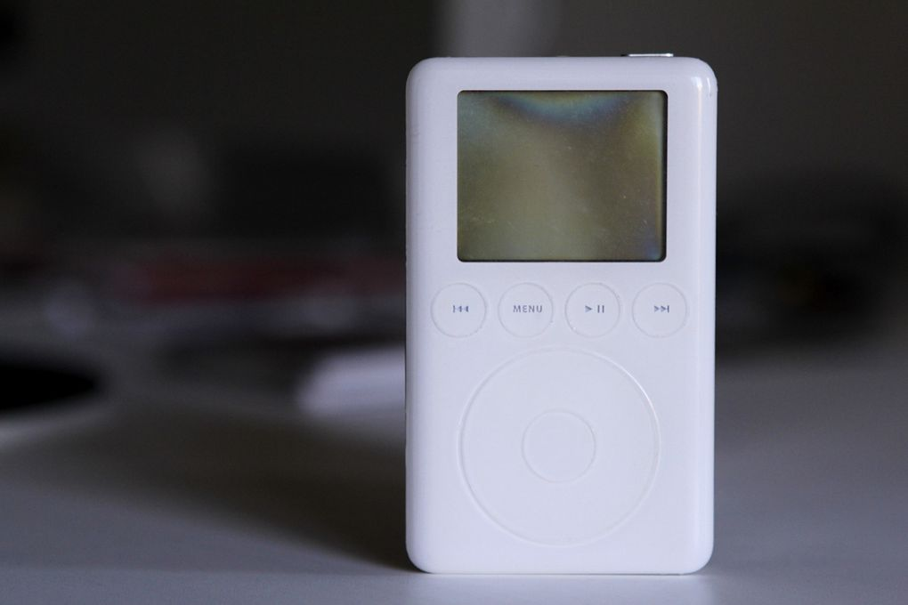

13 listopada 2017
Wiosna 2005 roku. Pierwsza praca, a właściwie staż w ramach roku studiów spędzonych na Sokratesie we Francji. Dojazdy do pracy to minimum godzina: dwie przesiadki, metro – kolej podmiejska – tramwaj. Początek jakoś minął na czytaniu darmowej gazety codziennej.

Za pierwszą wypłatę kupiłem iPoda. Model z talerzowym dyskiem 40GB, klik-kółkiem i dwucalowym czarno-białym wyświetlaczem o rozdzielczości 160×128 pikseli. Mniej więcej w tym samym czasie dostałem od znajomego spory pakiet e-książek w formacie .txt oraz .doc. W ramach fascynacji nową zabawką w odmętach internetu znalazłem stronę, która dzieliła dowolny plik tekstowy na mniejsze, tak by mieściły się w narzuconym przez iPody rozmiarze notatek.
Co więcej, iPodowe notatki obsługiwały bardzo podstawowy zakres tagów HTMLowych, ułatwiając tym samym nawigację pomiędzy nimi. Dzięki temu otrzymywaliśmy namiastkę dzisiejszych e-booków z podziałem na strony, a także zakładkami, gdyż można było wrócić do konkretnej notatki bez konieczności przewijania całej książki klik-kółkiem.
W ten sposób udało mi się przeczytać sporo książek ze świata "Gwiezdnych Wojen": pierwszą trylogię, "Cienie Imperium", trylogię Thrawna, dylogię "Ręka Thrawna" i pewnie jeszcze kilka innych dwa lata przed tym, jak Amazon zrewolucjonizował rynek nowoczesnego czytelnictwa wypuszczając Kindle'a. Mimo ledwie 12 lat czasu, dziś brzmi to jak niewyobrażalne retro i czasami sam zastanawiam się, jak mogłem czytać książki na ekraniku circa 8 na 6 centymetrów, z nijakim kontrastem, mieszczącym ledwie kilka linijek tekstu.